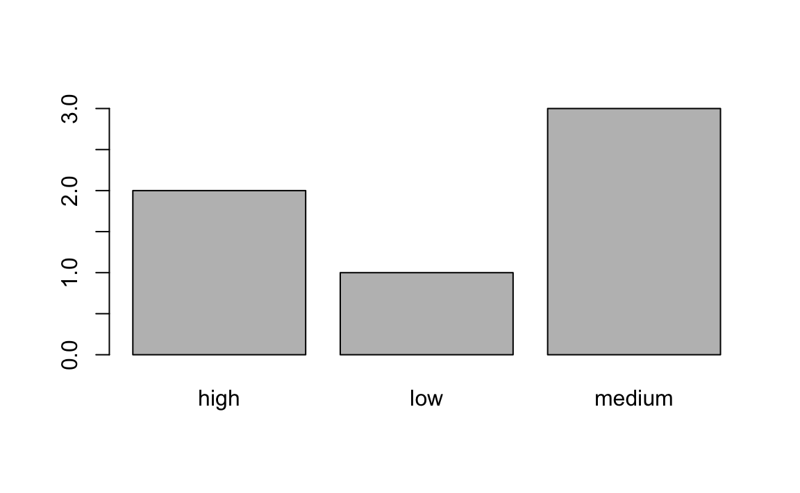
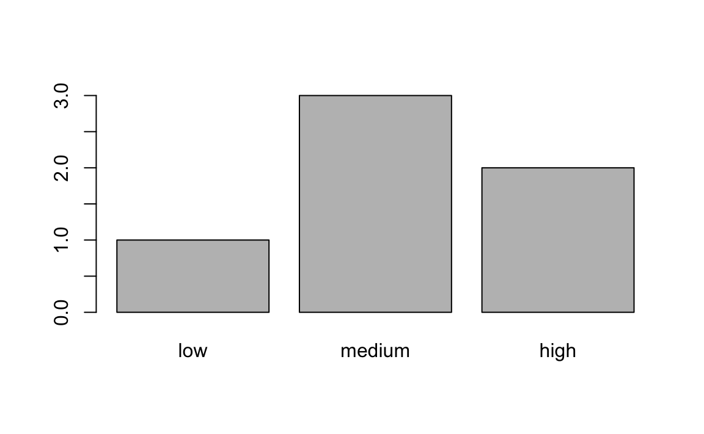
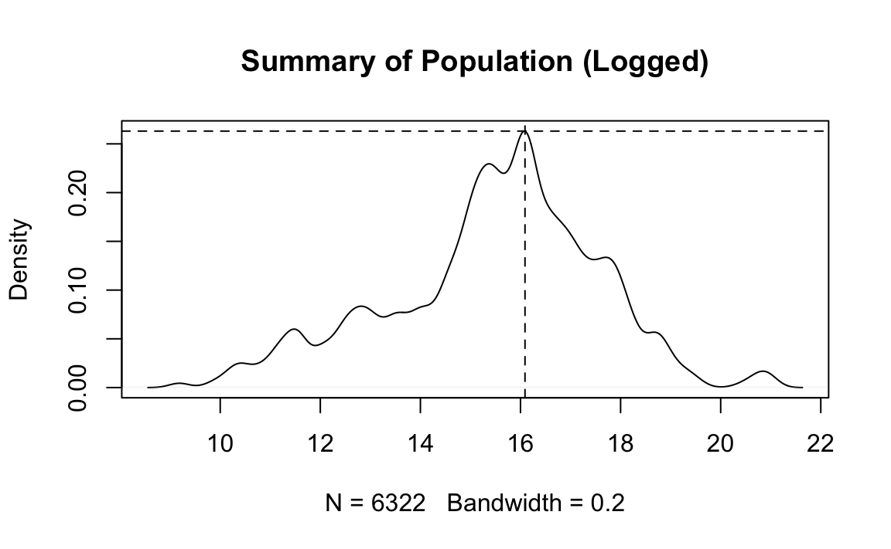
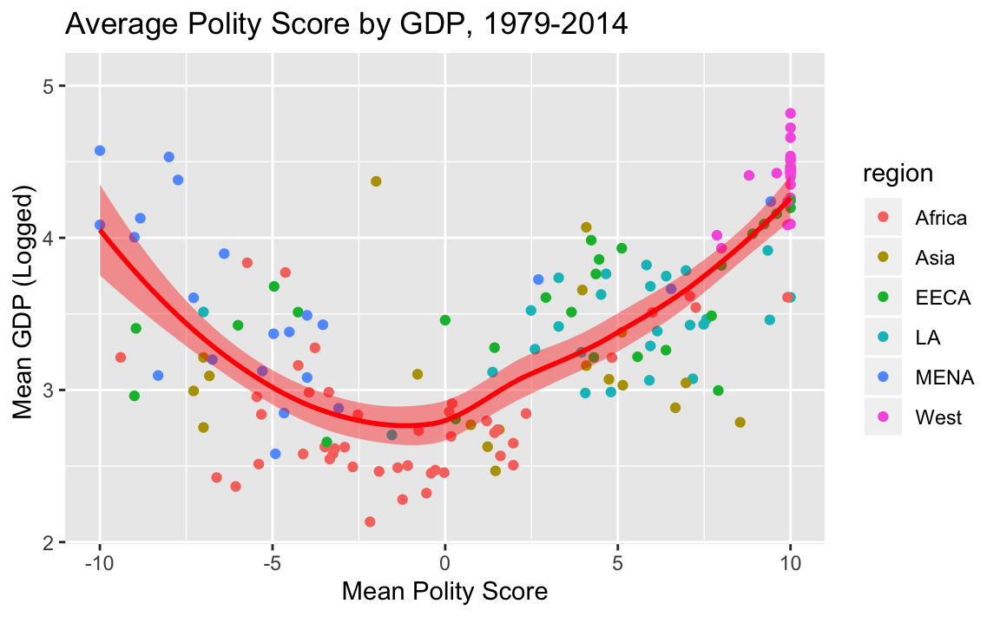
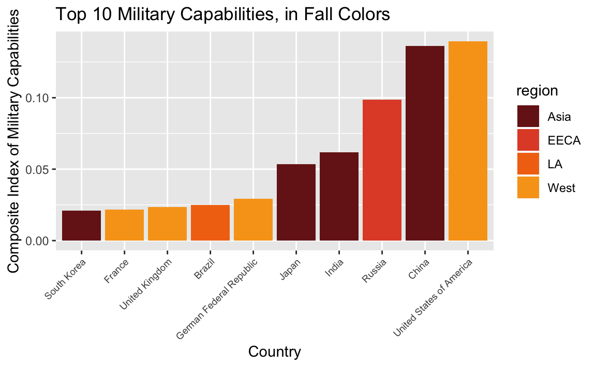
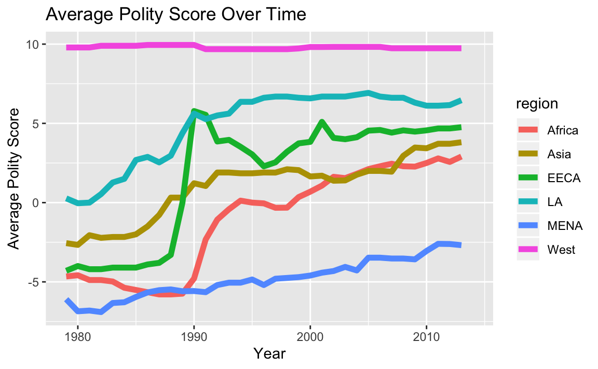
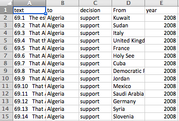

Chapter 20 Assignments
20.1 Assignment 1 Solutions
- Assigned: Oct 3, 2019.
- Due: Oct 10, 2019 at 12:29pm.
For this assignment, you will confirm that everything is installed and setup correctly, and you understand how to interact with R Studio and R Markdown.
Your answers (to this assignment only) will be posted on our course website.
1. Using R Markdown
In the space below, insert a picture of yourself, and complete the following information:

- Name: Daenerys Targaryen
- Department and degree program: Queen of the Andals and the First Men, Protector of the Seven Kingdoms, the Mother of Dragons, the Khaleesi of the Great Grass Sea, the Unburnt, the Breaker of Chains.
- Year in the program: First.
- One-sentence description of academic interests: I am interested in slavery, intercontinental conflict, and pyrology.
- Some non-academic interests: Dragons, Jon Snow, eating raw hearts.
- R version installed on your computer (Open a command line window (‘terminal’ or, on windows, ‘git bash’), and enter the following command
R --version): 3.6.1 - R Studio version installed on your computer (Open RStudio and, in the navigation menu, click on RStudio –> About RStudio): 1.1.456
- Primary computer operating system (Mac OS, Windows, Linux, etc): Mac OS 10.13.6.
- Programming experience (How would you describe your previous programming experience?): None.
2. Checking packages
Create an R chunk below, where you load the tidyverse library.
library(tidyverse)3. Knit and submit.
Knit the R Markdown file to PDF. Submit BOTH the .Rmd file and the PDF file to Canvas.
If you get an error trying to knit, read the error and make sure that your R code is correct. If that doesn’t work, confirm you’ve correctly installed the requisite packages (knit, rmarkdown). If you still can’t get it to work, paste the error on Canvas.
20.2 Assignment 2 Solutions
- Assigned: Oct 10, 2019.
- Due: Oct 17, 2019 at 12:29pm.
For this assignment, you’ll use what you know about R syntax and data structures to perform some common data operations.
1. Basics
1.1 Fix the following syntax errors. Enter your corrected code in the second chunk.
# 1
states <- ("California", "Illinois", "Ohio")
# 2
countries <- c("Iran", "Indonesia," "India", "Italy")
# 3
df <- data.frame(age = c(21, 66, 35)
party = c('rep', 'dem', 'rep'))
# 4
my-vector <- c("apples", "oranges", "kiwis")
# 5
artists <- list(names = c("Picasso", "Kahlo",
genre = c("cubist", "surrealist"))# PUT YOUR CORRECTED CODE HERE
# 1
states <- c("California", "Illinois", "Ohio")
# 2
countries <- c("Iran", "Indonesia", "India", "Italy")
# 3
df <- data.frame(age = c(21, 66, 35),
party = c('rep', 'dem', 'rep'))
# 4
my_vector <- c("apples", "oranges", "kiwis")
# 5
artists <- list(names = c("Picasso", "Kahlo"),
genre = c("cubist", "surrealist"))1.2 How many arguments does the order() function pass? What are they?
2. Vectors and Lists
2.1 Create three vectors:
a character vector,
titles, that contain the names of 3 of your favorite moviesa numeric vector,
year, that contains the years in which those movies were produceda boolean vector
bechdelthat TRUE/FALSE according to whether those movies pass the bechdel test
titles <- c("Dog Day Afternoon", "The Graduate", "Breakfast Club")
year <- c(1975, 1967, 1985)
bechdel <- c(TRUE, FALSE, TRUE)2.2 Put those three vectors in a list, called movies.
movies <- list(titles, year, bechdel)2.3 Print the structure of the list movies.
str(movies)
#> List of 3
#> $ : chr [1:3] "Dog Day Afternoon" "The Graduate" "Breakfast Club"
#> $ : num [1:3] 1975 1967 1985
#> $ : logi [1:3] TRUE FALSE TRUE3. Factors
3.1 Here’s some code that prints a simple barplot:
f <- factor(c("low","medium","high","medium","high","medium"))
table(f)
#> f
#> high low medium
#> 2 1 3
barplot(table(f))
How would you relevel f to be in the correct order?
f <- factor(f, levels = c("low", "medium", "high"))
# Test your code
barplot(table(f))
4. Dataframes
4.1 Coerce the movies object you made above from a list to a dataframe. Call it movies_df.
movies_df <- as.data.frame(movies)4.2 Add appropriate column names to movies_df.
names(movies) <- c("film", "year", "bechtel")20.3 Assignment 3 Solutions
- Assigned: Oct 17, 2019.
- Due: Oct 24, 2019 at 12:29pm.
For this assignment, you’ll be working on some real life data! I’ve prepared for your a basic country-year dataset, with the following variables:
- Country name
- Country numerical code
- Year
- UN Ideal point
- Polity2 score of regime type (from Polity VI)
- Physical Integrity Rights score (from CIRI dataset)
- Speech Rights score (from CIRI)
- GDP per capita (from World Bank)
- Population (from World Bank)
- Political Terror Scale using Amnesty International reports (from Political Terror Scale project)
- Composite Index of Military Capabilities (Correlates of War)
- Region
1. R Projects and Importing
1.1 Using getwd(), print your working directory below.
getwd()
#> [1] "/Users/rochelleterman/Desktop/course-site"1.2 Read country-year.csv into R, using a relative path. Store it in an object called dat.
dat <- read.csv("data/country-year.csv")2. Dimensions and Names
2.1 How many rows and columns are in the dataset?
dim(dat)
#> [1] 6416 132.2 Print the column names.
names(dat)
#> [1] "X" "year" "ccode" "country" "idealpoint"
#> [6] "polity2" "physint" "speech" "gdp.pc.wdi" "pop.wdi"
#> [11] "amnesty" "cinc" "region"2.3 Remove the X column from the dataset.
dat$X <- NULL2.4 One of the variables is called “gdp.pc.wdi”. This stands for “Gross Domestic Product Per Capita, from the World Bank Development Indicators”. Change this variable name in the dataset from " “gdp.pc.wdi” to “GDP”
names(dat)[8] <- "GDP"3. Summarizing
3.1 How many years are covered in the dataset?
length(unique(dat$year))
#> [1] 363.2 How many unique countries are covered in the dataset?
length(unique(dat$country))
#> [1] 1963.3 What is the range of polity2? How many NAs are in this column?
summary(dat$polity2)
#> Min. 1st Qu. Median Mean 3rd Qu. Max. NA's
#> -10 -6 5 2 9 10 12144. Subsetting
4.1 Subset dat so that it returns the third column AS A VECTOR (Do not print the object; store it in a variable.)
sub <- dat[[3]]
#OR
sub <- dat[,3]
#OR
names(dat)[3]
#> [1] "country"
sub <- dat$country4.2 Fix each of the following common data frame subsetting errors:
- Extract observations collected for the year 1980
dat[dat$year = 1980,]
# Corrected
dat[dat$year == 1980,]- Extract all columns except 1 through to 4
dat[,-1:4]
# Corrected
dat[,-c(1:4)]- Extract the rows where the polity2 score is greater than 5
dat[dat$polity2 > 5]
# corrected
dat[dat$polity2 > 5, ]- Extract the first row, and the third and fourth columns (
countryandidealpoint).
dat[1, 3, 4]
# Corrected
dat[1, c(3, 4)]- Extract rows that contain information for the years 2002 and 2007
dat[dat$year == 2002 | 2007,]
# Corrected
dat[dat$year == 2002 | dat$year == 2007,]4.3 What does summary(dat$polity2[dat$region =="Africa"]) do? Explain below in your own words.
It calculates some summary statistics for polity2 scores from observations in Africa.
4.4 Subset the data to include only observations from years 1990-2000 (inclusive). Put the subsetted data in a new variable called dat.1990.2000
dat.1990.2000 <- dat[dat$year >= 1990 & dat$year<=2000,]4.5 Using mean() function, tell me the average GDP of observations from 1990 to 2000.
mean(dat.1990.2000$GDP, na.rm = T)
#> [1] 66114.6 You just calculated the average GDP for years 1990-2000. Now calculate the average GDP from 2001 onwards. Tell me how much larger it is (in percentage).
dat.2001.plus <- dat[dat$year > 2000,]
mean1 <- mean(dat.1990.2000$GDP, na.rm = T)
mean2 <- mean(dat.2001.plus$GDP, na.rm = T)
(mean2 - mean1) / mean1
#> [1] 0.8254.7 Look up the helpfile for the function is.na(). Using this function, replace all the NA values in the polity2 column of dat with 0.
?is.na
dat$polity2[is.na(dat$polity2)] <- 0
summary(dat$polity2)
#> Min. 1st Qu. Median Mean 3rd Qu. Max.
#> -10.00 -5.00 0.00 1.46 8.00 10.0020.4 Assignment 4 Solutions
- Assigned: Oct 24, 2019
- Due: Nov 5, 2019 at 12:29pm.
For this problem set, we’ll be working with the country-year data introduced in the last assignment. As a reminder, the dataset contains the following variable:
year: Year.ccode: Country numerical code.country: Country name.idealpointUN Ideal point.polity2: Polity2 score of regime type (from Polity VI).physint: Physical Integrity Rights score (from CIRI dataset).speech: Speech Rights score (from CIRI).gdp.pc.wdi: GDP per capita (from World Bank).pop.wdi: Population (from World Bank).amnesty: Political Terror Scale using Amnesty International reports (from Political Terror Scale project).cinc: Composite Index of Military Capabilities (Correlates of War).region: Geographic region.
We’ll be merging this country_year data with new data about U.S. news coverage of women around the world (excluding the United States). In this new dataset, the unit of observation is article. That is, each row represents an individual article, with columns for:
publication: NYT or Washington Post.year: Year article was published.title: Title of the article.country: Country the article is mainly about.region: Region wherecountryis located.ccode: Numerical code forcountry.
1. Loading, subsetting, summarizing
1.1 Load the csv found in data/articles.csv into R. Be sure to set stringsAsFactors to FALSE. Store the data-frame to an object called articles and tell me the variable names.
library(tidyverse)
articles <- read.csv("data/articles.csv", stringsAsFactors = F)
names(articles)
#> [1] "publication" "year" "title" "country" "region"
#> [6] "ccode"1.2 How many countries are covered in the dataset?
length(unique(articles$country))
#> [1] 1471.3 The variable ccode reports a numerical ID corresponding to a given country. Print the names of the country or countries without a ccode (i.e. those countries where the ccode is NA.)
unique(articles$country[is.na(articles$ccode)])
#> [1] "Palestine"1.4 Remove all articles where the ccode variable is NA. How many observations are left with?
articles_no_na <- articles[!is.na(articles$ccode), ]
nrow(articles_no_na)
#> [1] 44942. Counting Frequencies and Merging
2.1 Create a new data frame called articles_country_year that tells us the number of articles per ccode (i.e. country code), per year.
The final data frame articles_country_year should contain three columns: ccode, year, and number_articles.
Print the first 6 rows of the articles_country_year.
Hint: The count function – part of the plyr package – might be helpful.
articles_country_year <- articles_no_na %>%
dplyr::count(ccode, year) %>%
select(ccode, year, number_articles = n)
kable(head(articles_country_year))| ccode | year | number_articles |
|---|---|---|
| 20 | 1980 | 4 |
| 20 | 1981 | 9 |
| 20 | 1982 | 4 |
| 20 | 1983 | 4 |
| 20 | 1984 | 6 |
| 20 | 1985 | 1 |
2.2. Load data/country-year.csv (this is the country-year data we worked with during the last assignment.)
country_year <- read.csv("data/country-year.csv", stringsAsFactors = F)2.3 Subset country_year such that it has the same year range as articles_country_year.
range(articles_country_year$year)
#> [1] 1980 2014
range(country_year$year)
#> [1] 1979 2014
country_year <-country_year %>%
filter(year > 1979)2.4 Merge (i.e. join) articles_country_year and country_year into a new dataframe called merged.
When you’re done, merged should have all the rows and columns of the country_year dataset, along with a new column called number_articles.
Print the first 6 rows of this new dataframe merged.
merged <- country_year %>%
left_join(articles_country_year)
#> Joining, by = c("year", "ccode")
kable(head(merged))| X | year | ccode | country | idealpoint | polity2 | physint | speech | gdp.pc.wdi | pop.wdi | amnesty | cinc | region | number_articles |
|---|---|---|---|---|---|---|---|---|---|---|---|---|---|
| 156 | 1980 | 700 | Afghanistan | -1.560 | NA | NA | NA | 276 | 13180431 | 5 | 0.001 | MENA | NA |
| 157 | 1980 | 540 | Angola | -1.176 | -7 | NA | NA | NA | 7637141 | 3 | 0.001 | Africa | NA |
| 158 | 1980 | 339 | Albania | -1.564 | -9 | NA | NA | NA | 2671997 | 3 | 0.001 | EECA | NA |
| 159 | 1980 | 696 | United Arab Emirates | -0.315 | -8 | NA | NA | 42962 | 1014825 | NA | 0.001 | MENA | NA |
| 160 | 1980 | 160 | Argentina | 0.128 | -9 | NA | NA | 2737 | 28120135 | 5 | 0.007 | LA | NA |
| 161 | 1980 | 900 | Australia | 1.423 | 10 | NA | NA | 10188 | 14692000 | NA | 0.007 | West | 3 |
2.5 In merged, replace all instances of NA in the number_articles column to 0.
# solution 1 - base R
merged$number_articles[is.na(merged$number_articles)] <- 0
# solution 2 - tidyr
merged$number_articles <- replace_na(merged$number_articles, 0)
# solution 3 - dplyr
merged <- merged %>%
mutate(number_articles = ifelse(is.na(number_articles), 0, number_articles))
# test
summary(merged$number_articles)
#> Min. 1st Qu. Median Mean 3rd Qu. Max.
#> 0.0 0.0 0.0 0.7 0.0 99.02.6 Which country-year observation has the most number of articles? Write code that prints the year, country name, and number of articles for this observation.
# solution #1 -- base R
merged[which.max(merged$number_articles),c("year", "country", "number_articles")]
#> year country number_articles
#> 5950 2013 India 99
# solution #2 -- tidyverse
merged %>%
top_n(1, number_articles) %>%
select(year, country, number_articles)
#> year country number_articles
#> 1 2013 India 993. Group-wise Operations
3.1 Using the merged data and our split-apply-combine strategies, print the total number of articles about women per region.
n_region <- merged %>%
group_by(region) %>%
summarise(count = sum(number_articles, na.rm = T))
n_region
#> # A tibble: 7 x 2
#> region count
#> <chr> <dbl>
#> 1 Africa 464
#> 2 Asia 1288
#> 3 EECA 251
#> 4 LA 328
#> 5 MENA 940
#> 6 West 1159
#> # … with 1 more row4. Long v. wide formats
4.1 Create a piped operation on merged that does the following:
1. Subsets the dataframe to select year, country, and number_articles columns. 2. Filters the dataframe to select only observations in the MENA region. 3. Spreads the dataframe so that each country is a column, and the cells represent `number_articles.
Print the first 6 rows of this transformed data frame.
wide <- merged %>%
filter(region == "MENA") %>%
select(year, country, number_articles) %>%
spread(country, number_articles, fill = 0)
kable(head(wide))| year | Afghanistan | Algeria | Bahrain | Egypt | Iran | Iraq | Israel | Jordan | Kuwait | Lebanon | Libya | Morocco | Oman | Palestine | Qatar | Saudi Arabia | South Sudan | Sudan | Syria | Tunisia | Turkey | United Arab Emirates | Yemen Arab Republic | Yemen People’s Republic |
|---|---|---|---|---|---|---|---|---|---|---|---|---|---|---|---|---|---|---|---|---|---|---|---|---|
| 1980 | 0 | 0 | 0 | 0 | 4 | 0 | 9 | 0 | 0 | 0 | 0 | 0 | 0 | 0 | 0 | 1 | 0 | 0 | 0 | 0 | 0 | 0 | 0 | 0 |
| 1981 | 1 | 0 | 0 | 2 | 1 | 0 | 2 | 0 | 0 | 0 | 0 | 1 | 0 | 0 | 0 | 1 | 0 | 0 | 0 | 0 | 1 | 0 | 0 | 0 |
| 1982 | 0 | 0 | 0 | 1 | 2 | 1 | 6 | 0 | 1 | 0 | 0 | 0 | 0 | 0 | 0 | 1 | 0 | 0 | 0 | 0 | 1 | 0 | 0 | 0 |
| 1983 | 0 | 0 | 0 | 0 | 0 | 0 | 2 | 0 | 0 | 0 | 0 | 0 | 0 | 0 | 0 | 0 | 0 | 0 | 0 | 0 | 0 | 0 | 0 | 0 |
| 1984 | 0 | 0 | 0 | 3 | 0 | 0 | 3 | 0 | 1 | 2 | 0 | 0 | 0 | 0 | 0 | 0 | 0 | 0 | 1 | 0 | 0 | 0 | 0 | 0 |
| 1985 | 0 | 0 | 0 | 6 | 0 | 0 | 1 | 0 | 1 | 3 | 0 | 0 | 0 | 0 | 0 | 0 | 0 | 0 | 0 | 0 | 0 | 0 | 0 | 0 |
4.2 Transform the dataset you created above back into long format, with three variables: year, country, and number_articles
Print the first 6 rows of this transformed data frame.
long <- wide %>%
gather(country, number_articles, -year)
kable(head(long))| year | country | number_articles |
|---|---|---|
| 1980 | Afghanistan | 0 |
| 1981 | Afghanistan | 1 |
| 1982 | Afghanistan | 0 |
| 1983 | Afghanistan | 0 |
| 1984 | Afghanistan | 0 |
| 1985 | Afghanistan | 0 |
20.4.0.1 Extra Credit
This question is not required. But it you want an extra challenge….
Transform the country_year data into an undirected dyadic dataset. Here, the unit of observation should be the dyad-year, with five columns:
ccode_1: Country 1ccodecountry_1: Country 1 nameccode_2: Country 2ccodecountry_2: Country 2 nameyear: Year of observationgdp_diff: Absolute difference of gdp between dyad.
This should be undirected dyadic dataset, meaning USA-Canada-1980 is the same as Canada-USA-1980, and we shouldn’t have duplicate rows for the same dyad.
Try to do it all in 1 piped sequence. Then tell me the dyad-year with the greatest wealth disparity.
dyad <- country_year %>%
expand(ccode_1=ccode, ccode_2=ccode) %>% # make two columns of states
filter(ccode_1 > ccode_2) %>% # from directed to undirected dyads
left_join(., country_year, by=c("ccode_1"="ccode")) %>% # get state1 info
left_join(., country_year, by=c("year", "ccode_2"="ccode")) %>% # get state2 info
mutate(gdp_diff = abs(gdp.pc.wdi.x - gdp.pc.wdi.y)) %>% # take absolute difference in gdp
select(ccode_1, country_1 = country.x, ccode_2, country_2 = country.y, year, gdp_diff) %>%
arrange(desc(gdp_diff))
kable(head(dyad))| ccode_1 | country_1 | ccode_2 | country_2 | year | gdp_diff |
|---|---|---|---|---|---|
| 516 | Burundi | 221 | Monaco | 2008 | 193705 |
| 450 | Liberia | 221 | Monaco | 2008 | 193661 |
| 531 | Eritrea | 221 | Monaco | 2008 | 193636 |
| 553 | Malawi | 221 | Monaco | 2008 | 193590 |
| 490 | Democratic Republic of the Congo | 221 | Monaco | 2008 | 193566 |
| 530 | Ethiopia | 221 | Monaco | 2008 | 193565 |
20.5 Assignment 5 Solutions
- Assigned: Nov 5, 2019
- Due: Nov 12, 2019 at 12:29pm.
For this problem set, we’ll be working with the country-year data introduced in the last assignment. As a reminder, the dataset contains the following variables:
year: Year.ccode: Country numerical code.country: Country name.idealpointUN Ideal point.polity2: Polity2 score of regime type (from Polity IV).physint: Physical Integrity Rights score (from CIRI dataset).speech: Speech Rights score (from CIRI).gdp.pc.wdi: GDP per capita (from World Bank).pop.wdi: Population (from World Bank).amnesty: Political Terror Scale using Amnesty International reports (from Political Terror Scale project).cinc: Composite Index of Military Capabilities (Correlates of War).region: Geographic region.
1. Getting Started
1.1 Read data/country-year.csv into R, using a relative path. Store it in an object called dat.
library(tidyverse)
library(stargazer)
dat <- read.csv("Data/country-year.csv", stringsAsFactors = F)2. Plotting
2.1 Write code that reproduces “plots/Plot_1.jpeg”. (No need to write the file.)
# Density of population
d <- density(log(dat$pop.wdi), na.rm = T, bw = .2)
plot(d, main = "Summary of Population (Logged)")
abline(h = max(d$y), v = 16.09, lty = 2) 
2.2 Write code that reproduces “plots/Plot_2.jpeg”. (No need to write the file.)
# get summary data
country_means <- dat %>%
filter(!is.na(region)) %>%
group_by(country) %>%
summarise(gdp = mean(gdp.pc.wdi, na.rm = T),
polity = mean(polity2, na.rm = T),
cinc = mean(cinc, na.rm = T),
region = region[1])
# plot
ggplot(country_means, aes(x = polity, y = log10(gdp))) +
geom_point(aes(color = region)) +
#scale_y_log10() +
geom_smooth(color="red", fill="red") +
ylab("Mean GDP (Logged) ") +
xlab("Mean Polity Score") +
ggtitle("Average Polity Score by GDP, 1979-2014")
#> `geom_smooth()` using method = 'loess' and formula 'y ~ x'
#> Warning: Removed 33 rows containing non-finite values (stat_smooth).
#> Warning: Removed 33 rows containing missing values (geom_point).
2.3 Write code that reproduces “plots/Plot_3.jpeg”. (No need to write the file.)
Hint: The fall-inspired colors are #771C19, #E25033, #F27314, #F8A31B
# military capabilities
top_cinc <- country_means %>%
top_n(10, cinc)
# Fall theme
rhg_cols = c("#771C19","#E25033","#F27314", "#F8A31B")
# plot
ggplot(top_cinc, aes(reorder(country, cinc), cinc, fill = region)) +
geom_col() +
theme(axis.text.x=element_text(size = 7, angle=45, hjust=1)) +
ylab("Composite Index of Military Capabilities") +
xlab("Country") +
ggtitle("Top 10 Military Capabilities, in Fall Colors") +
scale_fill_manual(values = rhg_cols)
2.4 Write code that reproduces “plots/Plot_4.jpeg”. (No need to write the file.)
# prepare data
year_means <- dat %>%
filter(!is.na(region)) %>%
group_by(year, region) %>%
summarise(gdp = mean(gdp.pc.wdi, na.rm = T),
polity = mean(polity2, na.rm = T),
physint = mean(physint, na.rm = T))
# plot
ggplot(year_means, aes(x = year, y = polity, color = region)) +
geom_line(size=2) +
ylab("Average Polity Score") +
xlab("Year") +
ggtitle("Average Polity Score Over Time")
#> Warning: Removed 6 rows containing missing values (geom_path).
3. Models
3.1 Write code that reproduces the model summary table “reg_table.txt” (and writes the file).
mod.1 <- lm(physint ~ polity2, data = dat)
mod.2 <- lm(physint ~ polity2 + log(gdp.pc.wdi), data = dat)
mod.3 <- lm(physint ~ polity2 + log(gdp.pc.wdi) + region, data = dat)
stargazer(mod.1, mod.2, mod.3, title = "Regression Results", type = "text",
covariate.labels = c("Polity2", "GDP per capita, logged", "Asia", "Eastern Europe", "Latin America", "MENA", "West", "Constant"),
dep.var.labels = "DV: Physical Integrity",
omit = "Constant",
keep.stat="n", style = "ajps",
out = "reg_table.txt")
#>
#> Regression Results
#> --------------------------------------------------
#> DV: Physical Integrity
#> Model 1 Model 2 Model 3
#> --------------------------------------------------
#> Polity2 0.124*** 0.064*** 0.033***
#> (0.004) (0.005) (0.005)
#> GDP per capita, logged 0.503*** 0.493***
#> (0.021) (0.028)
#> Asia -1.170***
#> (0.101)
#> Eastern Europe -0.033
#> (0.109)
#> Latin America -0.769***
#> (0.097)
#> MENA -1.460***
#> (0.116)
#> West 0.604***
#> (0.138)
#> N 4336 4141 4141
#> --------------------------------------------------
#> ***p < .01; **p < .05; *p < .120.6 Assignment 6 Solutions
- Assigned: Nov 12, 2019
- Due: Nov 21, 2019 at 12:29pm.
In this unit, we’ll use R to turn a bunch of loose text documents into a real-life database. (Note: This database was created for a project by R. Terman and E. Voeten, and was processed using much the same process as you’ll be learning here.)
The problem set will leverage your new R skills, especially working with strings; writing functions; using iteration; and thinking like a programmer.
Important: The code has been scaffolded for you, meaning that you have to fill in the blanks. Once you’re ready to submit the assignment, you have to remove the eval = F from the R chunk header. If you don’t, the chunk won’t execute when you knit the Rmarkdown file.
About the Data
We’ll be creating a database from Universal Period Review outcome reports.
The Universal Periodic Review (UPR) is a process run by the United Nations Human Rights Council, which involves a periodic review of the human rights records of all 193 UN Member States.
Reviews take place through an interactive discussion between the State under review and other UN Member States. During this discussion any UN Member State can pose questions, comments and/or make recommendations to the States under review. States under review can then respond, stating which recommendations they reject, accept, will consider, etc. Reports are then drawn up detailing this discussion.
We will be analyzing outcome reports from the 2014 Universal Period Reviews of 42 countries, which we retrieved here and formatted as text documents.
The goal is to convert these semi-structured texts to a tabular dataset of recommendations with the following variables:
- Text of recommendation (text)
- Country to which the recommendation is directed (to)
- Country that is making the recommendation (from)
- The year when the review took place (year)
- The response to the recommendation, i.e. whether the reviewed country rejects, accepts, etc (decision)
In other words, we want to turn this:

into this:

Take a few minutes to look at the files, which are located in data/txts, and get a sense for how they’re structured.
Then run the following code to get started.
library(readtext)
library(stringr)
library(tidyverse)
# read all texts
all_texts <- readtext("data/txts/")1. Extract One Document
We’re going to start off working with just one document. We’ll then use that code to iterate over all the documents.
task:
- Extract one document.
- Collect information on the country and year.
- Extract the section we’re interested in.
- Turn each line (i.e. recommendation) into an item in a vector.
Let’s start off working with cotedivoire2014.txt (the third file).
text <- all_texts$text[3]
file_name <- all_texts$doc_id[3]1.1 Assign country and year variables.
You’ll notice that the file_name consists of the name of the reviewed country and the year. Slice file_name to create 2 new variables, country, and year.
Be careful! Remember that we are going to apply this to the other file names later. However you slice “cotedivoire2014.txt”, it needs to work for the other files in the data/txts directory.
country <- str_sub(file_name, 1, -9)
year <-str_sub(file_name, -8, -5)1.2 Get the Recommendations Section
Note that the section we want starts with "II. Conclusions and/or recommendations\n". What function would you use to get everything after this substring? Fill in the blank below and assign the value to a new variable called rec_text.
sections = str_split(text, "II. Conclusions and/or recommendations\n")[[1]]
rec_text = sections[2] # get second item -- everything after.1.3 Turn it into a vector
Using a stringr function, turn the string above into a vector of lines, and store it in a variable called recs. Remember that a new line is represented by \n.
recs <- str_split(rec_text, "\n")[[1]]
recs[1:5]
#> [1] "127. The recommendations listed below enjoy the support of C™te dÕIvoire: "
#> [2] "127.1 Consider the accession to core human rights instruments (Lesotho); and to other main international human rights treaties that it is not yet a party to (Philippines); "
#> [3] "127.2 Make efforts towards the ratification of the OP-CAT (Chile); "
#> [4] "127.3 Ratify the OP-CAT (Ghana, Tunisia), as recommended previously in 2009 (Czech Republic) and take policy measures to prevent torture and ill-treatment (Estonia); "
#> [5] "127.4 Accede to the OP-CAT as soon as possible (Uruguay); "2. Chunk Recomendations
These texts have 3 sections each. 1. The first section contains those recommendations the country supports. 2. The second section contains recs the country will examine. 3. The third contains recommendations the country explicitely rejects.
task:
- parse recommendations into three piles, corresponding to accepted recs, examined recs, and rejected recs.
- combine these piles back into a dataframe, containing the text of the recommendation and its corresponding decision.
- add additional columns for
tocountry andyear.
2.1: Find the paragraph numbers
Each section starts with a main paragraph number (e.g. 127). The individual recommendations are then noted as subparagraphs (e.g. 127.1, 127.2 etc.).
All the accepted recommendations have the same main paragraph number (127). Next come the recommendations which will be examined, whose main paragraph number is just the next integer (128). After that are the rejected recommendations, with the next integer as their main paragraph number (129).
We can’t know the paragraph numbers beforehand, because each file is different. But we can leverage our knowledge of the structure of the documents to get them.
Fill in the blanks below to create 3 variables containing the 3 paragraph numbers.
para1 = str_extract(recs[1], "\\d+")
para1 = as.numeric(para1)
para2 = para1 + 1
para3 = para2 + 12.2 Parse the text
Now create 3 new vectors: accept_recs, examine_recs, reject_recs. Each vector should contain the recommendations assigned to its corresponding section.
hint: How do you know if a line belongs to a section? It starts with the main paragraph number for that section. So use the str_starts function.
# subset recommendations
accept_recs = recs[str_starts(recs, as.character(para1))]
# accept_recs = str_subset(recs, str_c("^", as.character(para1)))
examine_recs = recs[str_starts(recs, as.character(para2))]
reject_recs = recs[str_starts(recs, as.character(para3))]
# remove the first item from each list, which just demarcates the sections
accept_recs = accept_recs[-1]
examine_recs = examine_recs[-1]
reject_recs = reject_recs[-1]2.3 Tranform to Dataframe
The following code combines the three vectors back into a dataframe with two column: text (of the recommendation), and decicion (whether the recommendation was accepted, examined, or rejected)
recs_df <- list(accept = accept_recs,
examine = examine_recs,
reject = reject_recs)
recs_df <- stack(recs_df) %>%
select("text" = values, "decision" = ind)Your job is to add 2 new columns to this dataframe: to should contain the country under review, and year should contain the year under review. Note that we already created these variables above, in question 1.1
recs_df <- recs_df %>%
mutate(to = country,
year = year)
head(recs_df)
#> text
#> 1 127.1 Consider the accession to core human rights instruments (Lesotho); and to other main international human rights treaties that it is not yet a party to (Philippines);
#> 2 127.2 Make efforts towards the ratification of the OP-CAT (Chile);
#> 3 127.3 Ratify the OP-CAT (Ghana, Tunisia), as recommended previously in 2009 (Czech Republic) and take policy measures to prevent torture and ill-treatment (Estonia);
#> 4 127.4 Accede to the OP-CAT as soon as possible (Uruguay);
#> 5 127.5 Consider ratifying OP-CAT (Burkina Faso);
#> 6 127.6 Ratify the International Convention on the Protection of the Rights of All Migrant Workers and Members of Their Families (ICRMW) (Ghana);
#> decision to year
#> 1 accept cotedivoire 2014
#> 2 accept cotedivoire 2014
#> 3 accept cotedivoire 2014
#> 4 accept cotedivoire 2014
#> 5 accept cotedivoire 2014
#> 6 accept cotedivoire 20143. Get Recommending Country
task - extract the substring representing the recommending country. - add this information to our dataframe.
3.1 Extract recommending country
Take a look at several recommendation texts to get an idea of their format.
head(recs_df$text)
#> [1] "127.1 Consider the accession to core human rights instruments (Lesotho); and to other main international human rights treaties that it is not yet a party to (Philippines); "
#> [2] "127.2 Make efforts towards the ratification of the OP-CAT (Chile); "
#> [3] "127.3 Ratify the OP-CAT (Ghana, Tunisia), as recommended previously in 2009 (Czech Republic) and take policy measures to prevent torture and ill-treatment (Estonia); "
#> [4] "127.4 Accede to the OP-CAT as soon as possible (Uruguay); "
#> [5] "127.5 Consider ratifying OP-CAT (Burkina Faso); "
#> [6] "127.6 Ratify the International Convention on the Protection of the Rights of All Migrant Workers and Members of Their Families (ICRMW) (Ghana); "Notice that they’re all formatted the same way, with the recommending country in parenthesis at the end, in between parentheses.
Using your string skills, find a way to pull out the recommending country from the first recommendation (stored in first_rec below).
first_rec = recs_df$text[1]rec_after_paran <- str_split(first_rec, "\\(")[[1]]
rec_after_paran <- tail(rec_after_paran, 1)
first_rec_country = str_split(rec_after_paran, "\\)")[[1]]
first_rec_country <- first_rec_country[1]
# this should be 'Philipines'.
first_rec_country
#> [1] "Philippines"3.2 Create a Function
Create a function called get_country that passes an individual recommendation text and returns the recommending country.
get_country <- function(rec){
rec_after_paran <- str_split(rec, "\\(")[[1]]
rec_after_paran <- tail(rec_after_paran, 1) # get last item
first_rec_country = str_split(rec_after_paran, "\\)")[[1]]
first_rec_country <- first_rec_country[1] # get first item
return(first_rec_country)
}
# test your code
get_country(first_rec)
#> [1] "Philippines"3.3 Add from column
Using your map and dplyr skills, add a column to recs_df that contains the country issuing each recommendation.
recs_df <- recs_df %>% mutate(
from = map_chr(text, get_country)
)4. Repeat for all documents
We just wrote code that takes one document and turns it into a dataset!
The problem is we have 11 documents!
task
- combine the code we’ve written so far to create a function
- apply that function to all files to create a single dataset.
4.1 Make a function
Combine the functions that you wrote above to create a single function that passes a row number of all_texts (i.e. an integer), and returns a dataframe of fully parsed recommendations in that file.
parse_file <- function(i){
# get filename and text
text <- all_texts$text[i]
file_name <- all_texts$doc_id[i]
# get to country and year
country <- str_sub(file_name, 1, -9)
year <-str_sub(file_name, -8, -5)
# get vector of recs
sections = str_split(text, "II. Conclusions and/or recommendations\n")[[1]]
rec_text = sections[2] # get second item -- everything after.
recs = str_split(rec_text, "\n")[[1]]
# get paragraph numbers
para1 = str_extract(recs[1], "\\d+")
para1 = as.numeric(para1)
para2 = para1 + 1
para3 = para2 + 1
# chunk recommendations
accept_recs = recs[str_starts(recs, as.character(para1))]
examine_recs = recs[str_starts(recs, as.character(para2))]
reject_recs = recs[str_starts(recs, as.character(para3))]
# remove the first item from each list, which just demarcates the sections
accept_recs = accept_recs[-1]
examine_recs = examine_recs[-1]
reject_recs = reject_recs[-1]
# transform to dataframe
recs_df <- list(accept = accept_recs,
examine = examine_recs,
reject = reject_recs)
recs_df <- stack(recs_df) %>%
select("text" = values, "decision" = ind)
recs_df <- recs_df %>%
mutate(to = country,
year = year)
# add from column
recs_df <- recs_df %>% mutate(
from = map_chr(text, get_country)
)
}4.2 Map the function
Apply the function you created above to all rows in all_texts using your map_ skills. The final output should contain a dataframe of all the recommendations from all the files.__
all_recs <- map_dfr(1:nrow(all_texts), parse_file)4.3 Print Dimensions and Write a csv
Print the dimensions and export the full dataframe into a csv. You’re done!
dim(all_recs) # should be 1709 x 5
# write.csv(all_recs, "upr-recs.csv")20.7 Assignment 7 Solutions
- Assigned: Nov 21, 2019
- Due: Dec 5, 2019 at 12:29pm.
In this week’s lecture, we introduced some tools to collect pieces of data from individual presidential documents. For this assignment, we will be looking at all documents in the database that contain the string “space exploration.” Our goals in this problem set are:
- To scrape all documents returned from this search query
- To organize this data into a dataframe and ultimately output a CSV file.
Below, I’ve given you the code for a function that passes the URL of an individual document, scrapes the information from that document, and returns that information in a list.
But this is all I will be providing for you. You must complete the rest of the task yourself. Specifically, you should:
- Write code that scrapes all documents, organizes the information in a dataframe, and writes a csv file.
- The end goal should be a dataset identical to the one I’ve provided for you in
data/space.csv. - Split the code up into discrete steps, each with their own corresponding Rmarkdown chunk.
- Document (i.e. describe) each step in clear but concise Rmarkdown prose.
- The final chunk should:
- print the structure (
str) of the final data frame. - write the dataframe to a csv file.
Good luck!
library(tidyverse)
library(rvest)
library(stringr)
library(purrr)
library(lubridate)
scrape_docs <- function(URL){
doc <- read_html(URL)
speaker <- html_nodes(doc, ".diet-title a") %>%
html_text()
date <- html_nodes(doc, ".date-display-single") %>%
html_text() %>%
mdy()
title <- html_nodes(doc, "h1") %>%
html_text()
text <- html_nodes(doc, "div.field-docs-content") %>%
html_text()
all_info <- list(speaker = speaker, date = date, title = title, text = text)
return(all_info)
}Solution
There are likely many ways to achieve this task. Here’s one solution:
1. Write function scrape_urls to scrape URLs of individual search results.
The following function passes a page of search results, and returns a vector of URLs, each URL corresponding to an individual document.
scrape_urls <- function(path) {
html <- read_html(path) #Download HTML of webpage
links <- html_nodes(html, ".views-field-title a") %>% #select element with document URLs
html_attr("href")
return(links) #output results
}
scrape_test <- scrape_urls("https://www.presidency.ucsb.edu/advanced-search?field-keywords=%22space+exploration%22&field-keywords2=&field-keywords3=&from%5Bdate%5D=&to%5Bdate%5D=&person2=&items_per_page=100")
scrape_test[1:10]
#> [1] "/documents/special-message-the-congress-relative-space-science-and-exploration"
#> [2] "/documents/statement-the-president-support-the-administration-bill-relative-space-science-and"
#> [3] "/documents/statement-the-president-upon-signing-the-national-aeronautics-and-space-act-1958"
#> [4] "/documents/annual-budget-message-the-congress-fiscal-year-1960"
#> [5] "/documents/letter-t-keith-glennan-administrator-national-aeronautics-and-space-administration"
#> [6] "/documents/the-presidents-news-conference-225"
#> [7] "/documents/the-presidents-news-conference-augusta-georgia-0"
#> [8] "/documents/annual-message-the-congress-the-state-the-union-6"
#> [9] "/documents/special-message-the-congress-recommending-amendments-the-national-aeronautics-and-space"
#> [10] "/documents/special-message-the-congress-transfers-from-the-department-defense-the-national"2. Iterate over results pager to collect all URLs
scrape_urls collects all of the relative URLs from the first page of our search results (100 documents). While this is a good start, we have 4 pages of search results (310 results total) and need to collect the URLs of ALL results, from ALL result pages.
First, let’s grab the path of all 4 result pages, and store that result in an object called all_pages:
all_pages <- str_c("https://www.presidency.ucsb.edu/advanced-search?field-keywords=%22space%20exploration%22&field-keywords2=&field-keywords3=&from%5Bdate%5D=&to%5Bdate%5D=&person2=&items_per_page=100&page=", 0:3)Now, we can use scrape_urls to collect the URLs from all the pages of search results. We store the results as a character vector called all_urls.
all_urls <- map(all_pages, scrape_urls) %>%
unlist
# uncomment to test -- should be 310
length(all_urls)
#> [1] 3103. Modify to Full Path
The HREF we got above is what’s called a relative URL: i.e., it looks like this:
/documents/special-message-the-congress-relative-space-science-and-exploration
as opposed to having a full path, like:
http://www.presidency.ucsb.edu/documents/special-message-the-congress-relative-space-science-and-exploration
The following code converts the relative paths to full paths, and saves them in an object called all_full_urls.
all_full_urls <- str_c("https://www.presidency.ucsb.edu", all_urls)
all_full_urls[1:10]
#> [1] "https://www.presidency.ucsb.edu/documents/special-message-the-congress-relative-space-science-and-exploration"
#> [2] "https://www.presidency.ucsb.edu/documents/statement-the-president-support-the-administration-bill-relative-space-science-and"
#> [3] "https://www.presidency.ucsb.edu/documents/statement-the-president-upon-signing-the-national-aeronautics-and-space-act-1958"
#> [4] "https://www.presidency.ucsb.edu/documents/annual-budget-message-the-congress-fiscal-year-1960"
#> [5] "https://www.presidency.ucsb.edu/documents/letter-t-keith-glennan-administrator-national-aeronautics-and-space-administration"
#> [6] "https://www.presidency.ucsb.edu/documents/the-presidents-news-conference-225"
#> [7] "https://www.presidency.ucsb.edu/documents/the-presidents-news-conference-augusta-georgia-0"
#> [8] "https://www.presidency.ucsb.edu/documents/annual-message-the-congress-the-state-the-union-6"
#> [9] "https://www.presidency.ucsb.edu/documents/special-message-the-congress-recommending-amendments-the-national-aeronautics-and-space"
#> [10] "https://www.presidency.ucsb.edu/documents/special-message-the-congress-transfers-from-the-department-defense-the-national"4. Scrape Documents
Now that we have the full paths to each document, we’re ready to scrape each document.
We’ll use the scrape_docs function (given above), which accepts a URL of an individual record, scrapes the page, and returns a list containing the document’s date, speaker, title, and full text.
Using this function, we’ll iterate over all_full_urls to collect information on all the documents. We save the result as a dataframe, with each row representing a document.
Note: This might take a few minutes.
final_df <- map(all_full_urls, scrape_docs) %>%
bind_rows() 5. Print and write
We’ll print the dataframe’s structure, write the csv, and we’re done!
str(final_df)
#> Classes 'tbl_df', 'tbl' and 'data.frame': 310 obs. of 4 variables:
#> $ speaker: chr "Dwight D. Eisenhower" "Dwight D. Eisenhower" "Dwight D. Eisenhower" "Dwight D. Eisenhower" ...
#> $ date : Date, format: "1958-04-02" "1958-05-14" ...
#> $ title : chr "Special Message to the Congress Relative to Space Science and Exploration." "Statement by the President in Support of the Administration Bill Relative to Space Science and Exploration." "Statement by the President Upon Signing the National Aeronautics and Space Act of 1958." "Annual Budget Message to the Congress: Fiscal Year 1960." ...
#> $ text : chr "\n To the Congress of the United States:\nRecent developments in long-range rockets for military purposes ha"| __truncated__ "\n IN MY MESSAGE to Congress on space science and exploration I recommended that space science activities sp"| __truncated__ "\n I HAVE TODAY signed H. R. 12575, the National Aeronautics and Space Act of 1958.\nThe enactment of this l"| __truncated__ "\n To the Congress of the United States:\nThe situation we face today as a Nation differs significantly from"| __truncated__ ...
#write.csv(final_df, "data/space.csv", row.names = F)